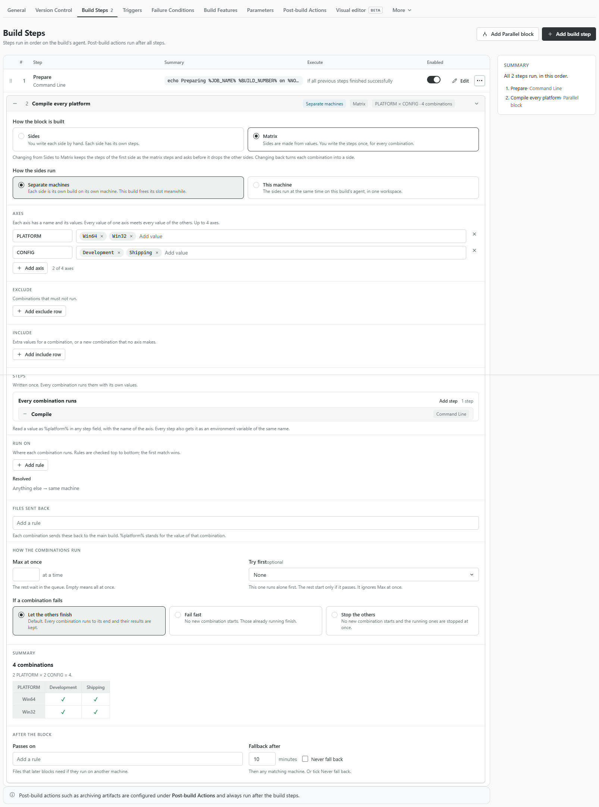

Matrix mode for Parallel blocks
Write the steps once, list the values they should run with, and Buildspawn runs one side for every combination, such as every platform and every configuration.
When to use it
Use Matrix mode when the same steps must run for several platforms or configurations, for example Win64, PS5 and Xbox, each in Development and Shipping. In plain Sides mode you would write each side by hand. In Matrix mode you write the steps once and use the values as %platform% and %config%.
How to set it up
- Open the build configuration and click Settings › Build Steps.
- Click Add Parallel block. Name it, for example
Cook all platforms. - Under How the block is built click Change to Matrix (the choices are Sides and Matrix). If the block already has several sides, Buildspawn asks first: the steps of the first side stay as the matrix steps and the other sides are dropped.
- Under Axes click Add axis. Type an Axis name such as
platformand its values, separated by commas, such asWin64, PS5, XboxSeriesX. Add more axes if you need them. - Optional: add Exclude rows for combinations that must not run, and Include rows for extra values or new combinations.
- Under Steps click Add step and add the steps. In any step field write
%platform%for the axis value. Every step also gets the value as an environment variable of the same name. - Choose Run on rules, Files sent back, Max at once, Try first and If a combination fails.
- Click Save block.

Every field
| Field | What it does | Default | Example |
|---|---|---|---|
| How the block is built | Sides: you write each side by hand. Matrix: sides are made from values. | Sides | Matrix |
| Axes | Each axis has an Axis name (letters, digits and underscores) and its values. Every value of one axis meets every value of the others. At most 4 axes and 256 combinations in all. | None | platform = Win64, PS5; config = Development, Shipping |
| Exclude | Rows of combinations that must not run. A combination that has all the values of a row is dropped. | None | platform = PS5 and config = Development |
| Include | Extra values for the combinations a row matches, or a new combination when it matches none. | None | platform = Win64, sign = yes |
| Steps | Written once. Every combination runs them with its own values. Read a value as %platform%. | None | Build.bat %platform% %config% |
| Run on | Where each combination runs. Rules are checked top to bottom and the first match wins. A rule says When an axis has some values, or Anything else, and then picks an Agent requirement, A pool or label (for example pool:Consoles or console-%platform%) or Same machine as before. | As the rules | When platform is PS5: pool Consoles |
| Files sent back | Rules for the files each combination sends back to the main build. %platform% stands for the value of that combination. | All changed files | Saved/StagedBuilds/%platform%/** |
| Max at once | How many combinations run at the same time. The rest wait in the queue. Empty means all at once. | Empty | 3 |
| Try first | One combination that runs alone first. The rest start only if it passes. It ignores Max at once. | None | platform = Win64, config = Development |
| If a combination fails | Let the others finish: every combination runs to its end and results are kept. Fail fast: no new combination starts, running ones finish. Stop the others: no new one starts and the running ones are stopped at once. The build fails after the block in all three cases. | Let the others finish | Fail fast |
| Fallback after, Passes on | As in Parallel blocks. | 10 minutes |
A worked example
The Game / Windows Build build configuration cooks a Unreal Engine game for three platforms and two configurations.
- Add a Parallel block
Cookand change it to Matrix. - Axis
platform:Win64, PS5, XboxSeriesX. Axisconfig:Development, Shipping. That makes 6 combinations. - Exclude
platform = PS5withconfig = Development. 5 combinations remain. - Add one Command Line step:
Build\Cook.bat %platform% %config%. - Run on: when
platformisPS5orXboxSeriesX, A pool or labelpool:Consoles; anything else, Same machine as before. - Set Max at once to
3, Try first to Win64 Development and Files sent back toSaved/StagedBuilds/%platform%/**. Click Save block.
What you see when it runs
The build page shows a grid of the results, one cell per combination, with Re-run for a single combination. The console has one lane per combination. The Build Steps list shows the block with a tag such as 5 combinations. A trend panel shows how the combinations did over the last builds.
Problems and fixes
| Problem | What to do |
|---|---|
| An axis name is a word of letters, digits and underscores | Use a name like platform. Spaces and dashes are refused. |
| The matrix makes N combinations. The most it can run is 256 | Remove values or an axis, or add Exclude rows. |
| Two axes are called … | Give each axis its own name. |
| Max at once is a whole number of 1 or more | Type a number, or leave the field empty. |
| Changing from Matrix back to Sides | Each combination becomes a side with the same steps. Buildspawn asks first, and unsaved changes in the block are lost. |